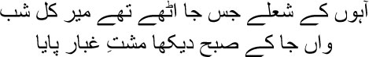
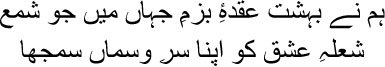
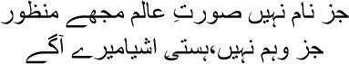
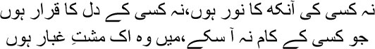
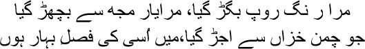
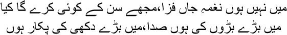
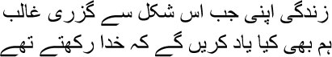

39

Where the flames of Mir’s lament raged last night
All I saw this morning was a handful of ashes
 hen the British annexed Awadh and exiled Nawab Wajid Ali Shah to Calcutta, I crumpled in anger and loathing, Manto bhai. I was an outsider to Awadh, but still it felt as though I had been personally evicted. The same British who had once seemed harbingers of a new civilization now revealed their teeth and claws to me with their destruction of Awadh. It wasn’t just rage and hatred, I was also consumed by despair. Were the British going to bury our culture this way, destroying each of our states and exiling the rulers? No one with a sense of justice could accept this penchant for annihilation, my brothers. I could not accept Nawab Wajid Ali Shah being exiled. I was sure that they would now swallow us entirely, Manto bhai; all the people of Hindustan—Hindu or Muslim, it made no difference—would be sent into exile; we would have to wander about as refugees.
hen the British annexed Awadh and exiled Nawab Wajid Ali Shah to Calcutta, I crumpled in anger and loathing, Manto bhai. I was an outsider to Awadh, but still it felt as though I had been personally evicted. The same British who had once seemed harbingers of a new civilization now revealed their teeth and claws to me with their destruction of Awadh. It wasn’t just rage and hatred, I was also consumed by despair. Were the British going to bury our culture this way, destroying each of our states and exiling the rulers? No one with a sense of justice could accept this penchant for annihilation, my brothers. I could not accept Nawab Wajid Ali Shah being exiled. I was sure that they would now swallow us entirely, Manto bhai; all the people of Hindustan—Hindu or Muslim, it made no difference—would be sent into exile; we would have to wander about as refugees.
Another version of the events was heard around the same time. The British had already informed us that the descendants of the Mughal dynasty would be shifted out of the fort to a house near Qutub Shahi, and that no one after Emperor Zafar would get the title of king. Did every decision by the British have to be accepted? Many inhabitants of Shahjahanabad had begun to believe that the Shahenshah of Persia or the Czar of Russia would drive the British out and restore the glory of the Mughal Empire. Some people had pasted a poster on the wall of Jama Masjid two months before the revolt. It said that the Shah of Persia would arrive in this country very soon to rescue his suffering brothers. Even Hasan Askari, the son of the pir at the fort, predicted after making astrological calculations that something would happen soon to make the flag and the honour of the Mughal Empire soar in the sky once again. But we did not realize that this event would be the Sepoy Mutiny.
Many rumours were swirling, my brothers. They made me feel I was living in a land of fairies. People whispered to one another. One day I met Hasan Khan, constable of Paharganj, at Ghulam Nabi’s paan shop in Chandni Chowk. ‘What’s all this I hear, mian?’ I asked.
— I’m going mad with all the rumours, Mirza sahib.
— All these wild stories are true, then?
— How can I tell? But there’s definitely something going on beneath the surface, Mirza sahib.
— What’s all this about chapatis?
— I heard the stories too, but I didn’t believe them at first. Early yesterday morning the chowkidar of Indrapur village came and showed me a chapati. Apparently he had got it from the chowkidar of Sarai Farooq Khan. He had been told to make five more of such chapatis and pass them to the chowkidars of five other villages, and to tell each of them to pass on five chapatis to five other villages. I can’t make out what’s going on, Mirza sahib.
— Is anyone sending information inside the chapatis?
— No, there’s nothing inside. I also heard that mutton is being distributed at some places.
— This looks like a magician’s trick, mian.
Things grew more and more mysterious with every passing day, Manto bhai. The whispers increased. People looked as though they could no longer trust one another. News of sepoys rising in mutiny began to filter in from different places. Apparently British soldiers were given many facilities while soldiers from Hindustan were treated like slaves. There were only a few months to go for the hundredth anniversary of the Battle of Plassey. I was told that the Wahabis had announced that Hindustan had to be made independent again on June 23. Shahjahanabad was calm, but the breeze brought in news of war-like situations everywhere.
May 11. The date seemed to have been lurking in wait for us, my brothers. Now it pounced like a cheetah. That afternoon, the gates and walls of the fort shook in an explosion, the echoes spreading to every corner of the city. It was bigger than an earthquake. Rebel forces from Meerut arrived to occupy Shahjahanabad. They had entered the city through the Rajghat Gate near Daryaganj. The guards and soldiers stationed in the city joined forces with them. An orgy of killing began. The familiar map of Shahjahanabad was covered in blood. Kill Britishers and Anglo-Indians on sight, plunder their homes and set them on fire. It’s not just the enemy that perishes in a massacre, my brothers, innocent bystanders are wiped out too. There was no tally of the ordinary citizens of Shahjahanabad who were killed.
Muhammad Bakht Khan, the leader of the rebel forces, was a subedar in a company of foot soldiers stationed in Bareilly. Under his leadership, Emperor Bahadur Shah was virtually imprisoned. He would have to accede to whatever the rebels wanted to do. Bakht Khan had only one thing to say. ‘You shall be the Emperor of Hindustan again, Jahanpanah. But you have to do as we say.’ They had Prince Mirza Mughal supporting their cause, too. The emperor had no choice but to agree to everything. Maybe he was tempted, just in case he could regain his throne thanks to all this turmoil. After all, he was incapable of doing anything on his own. What could he have done anyway? He was eighty-two at the time; he could only nod sleepily all day.
With the emperor as a front, it was his eldest son Mirza Mughal who controlled everything. Prince Jawan Bakht became the prime minister. The commissioner was reinstated. And do you know what Muhammad Bakht Khan’s title was? Sahib-e-Alam Bahadur. The brave lord of the universe! There was no such post in the Mughal court before this. Hakim Ahsanullah Khan, whom the emperor trusted implicitly, was labelled a British spy. People stormed his house with the intention of killing him, but he was with the emperor in the fort at the time. Not finding him at home, the maddened crowd arrived at the fort, where the emperor saved Ahsanullah Khan by wrapping his arms around him. But the hakim sahib’s house was looted—his lovely house, as beautiful as a Chinese painting, was torched.
Whatever the emperor’s failings, he was steeped in his culture—a culture that began with Emperor Babar and blossomed to fullness in the time of Emperor Akbar. All you have to do is picture Fatehpur Sikri to understand its beauty. Mian Tansen’s music was the pinnacle of this culture. Emperor Jahangir’s picture gallery was lined with amazing paintings from the same culture. Bahadur Shah could not possibly have accepted these uncivilized, barbaric soldiers. The fort was nothing but a stable for them. ‘How will you protect your empire with these people, Mirza?’ he asked Mirza Mughal one day. ‘They go everywhere on their horses. The British officers never behaved this way; they would dismount at the entrance to the Diwan-e-Aam and enter barefoot.’
— We need them to keep the empire.
— These uncultured brutes? Do you think I don’t keep myself informed? They’re plundering the markets. They’re breaking into noblemen’s homes under the pretext that Englishmen are hiding inside and looting them.
— How does it matter to you, Jahanpanah? Don’t you want to keep wearing your crown? They have made you the emperor, after all.
— Emperor of swine.
— But emperor nevertheless.
Yes, Manto bhai, it was actually a time when things were turned upside down. I could not understand what was going on. It was a period of darkness, when you were forced to take sides. You were either for the emperor, or on the side of the British. How could a man like me choose so easily? I knew I was worthless to both sides as a poet; they would only use me as required. I was nothing but the grass being flattened in a battle between elephants. I had to balance myself between both sides. The emperor mustn’t cut me off, but the British must not suspect me either.
So I picked a corner of my room and began to write, Manto bhai. What else could a poet do in times like these? With the centuries-old empire now a rotting corpse, while the concealed daggers were clearly visible in the belts of those who had arrived as harbingers of civilization, what else was there to do besides paying homage to the corpse with an array of words? I began to write Dastambu. I would have to write all that I could see and hear, all that was happening around me, in Farsi prose. I named this bloody chapter Dastambu—A Bouquet of Flowers. I had imagined that someone or the other would have realized that the bouquet had blood on it, but later I realized that no one understood. I patted myself on the back for this. Finally you have learnt the art of hinting at things, mian. It was necessary to acquire this skill, Manto bhai. Otherwise a bullet—either from the rebels or from the British—would definitely have found its way to my chest.
I had to attend the emperor’s durbar. Besides the task of correcting his poems, I had to convey the fact that I was on his side. The coins that the emperor released with the help of the rebels during his reign of four months carried a sher I wrote for him.
When the rebels declared that Bahadur Shah was the Emperor of India, I even wrote a qaseeda for him.
One day he whispered to me, ‘What do you see, ustadji?’
— Your heyday is back, emperor.
— No. Haven’t you seen the lamp before it dies?
— I have, Jahanpanah.
— That’s me. The lamp.
I knew as much even without his having to tell me. I recited a sher to him that day:

In the terrible emptiness of this worldly gathering
I considered the flame of love all I had
— Excellent, ustadji!
Other than proving my loyalty by appearing at the royal court from time to time, I kept writing Dastambu in my cell. I felt it was more important to write this account than to explicitly announce where my loyalties lay. I would have to write a daily log of our misery as impartially as possible. I knew it was not possible to do anything impartial. But still I wanted to write down an account of the events.
I know you will be upset, Manto bhai, but I could not accept the supremacy of lower-class sepoys. My culture was a different one. Even if I were to die of starvation, I would never be able to burn down anyone’s art gallery. After all, paintings had satiated the appetite of my eyes and mind. I saw for myself how the sepoys destroyed each of the things of beauty in the fort. All they needed to keep their mutiny alive was food and money. They sold many of the priceless treasures of the city. If a revolution meant such barbarity, I did not support it. With all my heart and soul I wanted the British to regain possession of Shahjahanabad. At least peace would be restored.
Yes, my friend, I know you want to bring up the annexation of Awadh, don’t you, Manto bhai? I hated it with all my heart. But still I retained an iota of hope, that the British at least would not demolish everything beautiful. Just imagine, Manto bhai, the sepoys lived in the barracks—it was just like prison—they had no life beyond food and sleep and sexual desire. Whatever culture they brought with them into the barracks was destroyed by the cruelty inculcated within them in preparation for war. At the end of the day, soldiers can fight wars and raze cities, but they can never usher in freedom. Freedom can be brought in only by the man on the road, whose weapons are rocks, branches of trees, and the memories of many centuries of warfare handed down by his ancestors. The battle to protect one’s own house, own river, own forest … freedom is not just for human beings, Manto bhai, there is also freedom for waterfalls, freedom for trees, freedom for birds, freedom for fish … can soldiers in barracks ever think of such freedom? They have only been taught to fight in wars, but the battle for independence is more than a war with guns and cannons.
I can say all this to you now, but back then I had to keep my mouth shut. So I had nothing else to do besides writing Dastambu. Meanwhile, with the rebels having taken control of the city, my pension from the British government had been stopped. I had no idea how to provide for all the people at home. Worrying about it only made me want to laugh.

The world exists only by name
All is imaginary, without basis, over here
My days went from bad to worse. I waited for the British to take control of Shahjahanabad again, and restore normalcy. As you know, Manto bhai, I didn’t have to wait very long. The sepoys had taken over Shahjahanabad on a Monday in May; and on September 14 of the same year, also a Monday, the British regained control. The battle went on till September 20. The British occupied the fort that same day. The emperor escaped and took shelter in Humayun’s tomb. It was like a sher from a ghazal, Manto bhai. The dying emperor seeks refuge at a grave. Eventually he surrendered to Captain Hodson on the assurance that he would be freed. Two of his sons, Mirza Mughal and Mirza Khijr Sultan, were shot dead personally by Captain Hodson in front of Khuni Darwaza. The emperor didn’t spare them a glance, for he was too busy saving himself. I heard that Mirza Mughal apparently said before he died—‘Remember, my Hindu and Muslim friends, you will get a lot if you are united.’ I saw such gruesome scenes during those days, Manto bhai. Eleven princes had been murdered in cold blood and left in Chandni Chowk, only a rag covering their naked bodies. Was this what the descendants of the Mughal dynasty deserved? The emperor and his wife Begum Zeenat Mahal were imprisoned in a tiny, dark room in the fort. The British considered him a beast in a zoo. He would lie on a makeshift bed in soiled clothes, repeating, ‘I’m very happy, I’m very happy.’ I heard from some people that he would stare at the floor all day and night, occasionally snapping out of his slumber to recite his own ghazals. Then his trial began, continuing for twenty-one days. I was told that he was asleep during most of the proceedings. He wrote the last ghazal of his life with a piece of chalk on the wall of the cell he was imprisoned in:

Not the light in anyone’s eye, nor the peace in anyone’s heart,
Someone who is of no use to anyone, I am a handful of dust

My beauty has deserted me, my brothers have abandoned me,
I am the harvest of the garden that dried up in autumn

I am no music of the heart, it’s no use listening to me,
I am a desolate lament, my wails hold nothing but misery
After the English took possession of Shahjahanabad, I thought I was listening to the final cries of a dying beast. General Wilson, the Commander General of the British forces, threw a dinner at the Private Stateroom, the Diwan-e-Khas, of the fort the same night that they occupied the city. The honour of the Diwan-e-Khas was ground to the dust in a single night. When I think of it even now, my anger rages like a trapped animal. I will recount everything, my brothers, everything— how Shahjahanabad was emptied out—how the few of us who remained in Dilli spent our days in the fires of hell.
It was during this time that Mirza Yusuf left us, Manto bhai. I have told all of you already about this brother of mine; Yusuf had spent nearly thirty years in a state of madness. But he never troubled anyone; he would just sit muttering to himself, disappearing for several days sometimes before returning home. After the British occupied Dilli, many people fled out of fear of torture and death; Yusuf’s wife and daughters abandoned him and escaped. The reason I cited in Dastambu for Yusuf mian’s death was untrue, Manto bhai. I was actually writing Dastambu in order to present it to the British, so that they could give me a title and an allowance, and settle my pension in my favour. I did not want to consciously include anything in Dastambu that would make the British suspect me of being one of the revolutionaries. But you know what, one’s creation goes out of one’s control at some point; true to its own calling, what you write holds hints to the truth within itself. That is why you will still see in Dastambu the images of the hell to which the British took us. The British Empire was the angel of freedom for Hindustan, yes, I wrote as much over and over again in Dastambu. But accounts of the destruction of Shahjahanabad within fifteen months of the beginning of the Mutiny, of the worm-like lives that we lived, are also presented in there.
In Dastambu I wrote that Mirza Yusuf died after five days of high fever. The chowkidar of his house informed us. But Yusuf was actually shot dead by the British. There was firing everywhere and all the time. Frantic at all the noise, Yusuf went out on the road and collapsed under a hail of fire. I know, Manto bhai, that the lord will never forgive this lie. I wrote a falsehood about my brother’s death in my book in order to save my skin. I will never be released from hell. What was I to do with his corpse now? Given the state of Shahjahanabad, I had no idea where to get a sheet of cloth for his shroud. Who would bathe the corpse, where would I find gravediggers, where would the brick and lime come from? Which graveyard would I lay him to rest in? The Hindus could at least cremate their dead on the banks of the Yamuna. But what were we Muslims to do? There was constant firing in the street—how would I even get Yusuf to the graveyard? Some of our neighbours lent a hand. Kallu and another servant were there too. They were the ones who bathed the corpse, wrapped him in rags, and dug a grave in the grounds of the nearby mosque to bury Yusuf. The last bond of blood was severed, Manto bhai.
It was a time to vanish. Many fled; many others were evicted from the city. Those of us who stayed behind were prisoners of fear and hope. There was no balm to salve the souls either of those who had left or of those who had remained. Death seemed to have slipped grey masks on everyone’s faces. Chandni Chowk was like a valley of death. The British hanged from the trees anyone they could get hold of. Spies roamed everywhere. Let’s say you and I had had a feud, I took the opportunity to report you to the British as a member of the revolutionaries.
Sometimes I wondered whether I didn’t commit acts of betrayal as well. I did, my brothers, as I must confess today. However dazzling an example of Farsi prose Dastambu might be, it is also a document of betrayal. I painted a picture of a period of nightmares, but to save myself I also sold the picture to the foreign empire.

When all my life has passed in this manner, Ghalib
What grace of God from the past can I possibly recollect?